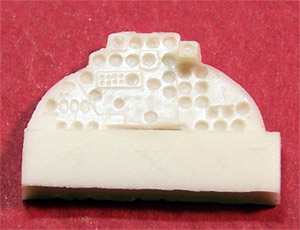

Pavla 1/72 IL-28 Resin Detail Package
Kit #17233
MSRP $9.71
Images and text Copyright � 2005 by Matt Swan
The Ilyushin IL-28 Beagle held an important role in history as a piece in the Cold War and an inventory item in many European Air Forces. The aircraft has had a slow evolution within the modeling industry with Bilek being the first company to produce the kit. This offering was quite rough with no real interior detail offered. Shortly after this kit hit the market Italeri picked it up and reissued it with no improvements from the original Bilek offering. The aftermarket industry did kick in rather quickly with a few items to dress it up like the PE package from Eduard but the resin package produced by Pavla out of the Czech Republic was the real show stopper. Once Trumpeter got into the act and retooled the original Bilek kit the addition of the Pavla package makes for an exceptional model building experience.
The Pavla kit covers the entire cockpit and nose compartment in addition to the nose landing gear bay. The pieces are cast in a very light beige resin with medium sized pour blocks. The weakest aspect of the kit is that it is packaged in a hard clear plastic bubble card that allows the parts to rattle around and abrade against themselves during shipping. My set had taken some light damage from this with the front edge of one seat being broken off. My set was also missing the pilot�s control yoke. That�s the bad news, now for the good news � the quality of the castings are very fine and the detail level is exceptional. The sidewalls and framing on the seats are so fine as to be nearly transparent. This does make things slightly on the fragile side but does keep it to scale.
Taking a look at some of the individual pieces; the dash appears to be accurate from what I�ve seen of reference photos. There are no interior instrument face details but the placement of instruments is good and the depth of the faces is good. The seats feature seatbelts molded in place, finely cast ejection handles and good material pattern on the cushioned areas. The cockpit tub has good detail to the sound deadening material on the aft bulkhead, nicely detailed molded in side panels and rudder pedals.

Other items of interest are the bombardier�s access hatch, this is nice and thin with excellent interior texture, the nose gear doors are replaced with resin pieces that address the unrealistically thick kit doors and the many small panels and instruments for the bombardier�s compartment. The reverse side of the light cardboard package back is the installation instructions. These present a fairly clear pictorial series for placement of each piece along with a complete color chart and painting instructions.
I have seen this model built using the Eduard set before and the PARTS PE set and they do make for a nice kit but even there the modeler has to do something with the crappy kit seats. This set takes care of that with some superbly done seats, correct panels and instrumentation, correct thickness and detail of access door and gear doors. When balancing the pros and cons of the different detail packages for this model I have to go with the Pavla set for my build. The only short comings on this kit are the possibility of damage during shipping and difficulty in finding it in the United States. Both Great Models and Stevens International stock Pavla kits but at the time of this writing neither listed this set in their inventory. Hannants in the U.K also stocks Pavla and does show this set in their inventory. I give this set a good recommendation.
Review sample compliments of Pavla Models.